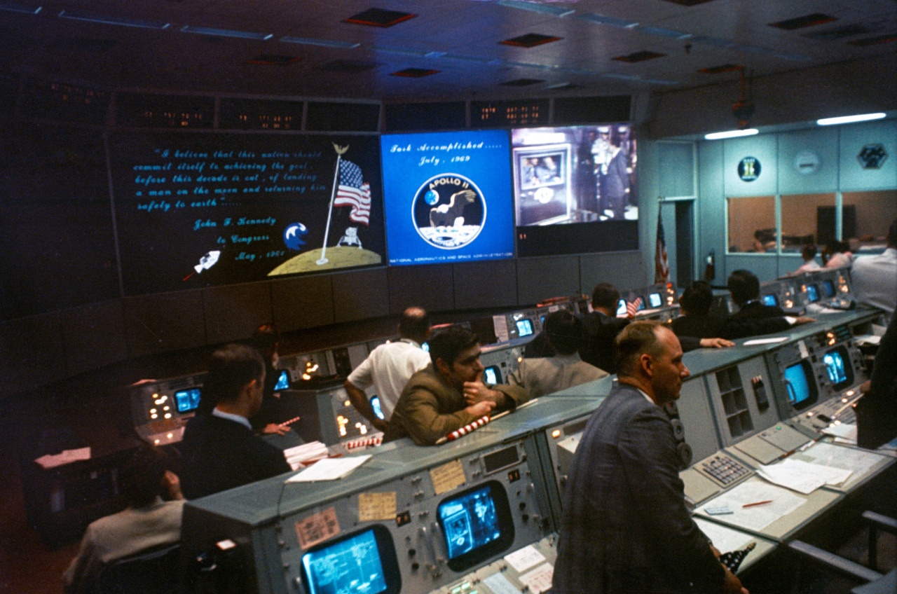

24 July 1969
Overall view of the Mission Operations Control Room (MOCR) in the Mission Control Center (MCC), Building 30, Manned Spacecraft Center (MSC), at the conclusion of the Apollo 11 lunar landing mission. The television monitor shows President Richard M. Nixon greeting the Apollo 11 astronauts aboard the USS Hornet in the Pacific recovery area. Astronauts Neil A. Armstrong, Michael Collins, and Edwin E. Aldrin Jr. are inside the Mobile Quarantine Facility (MQF).